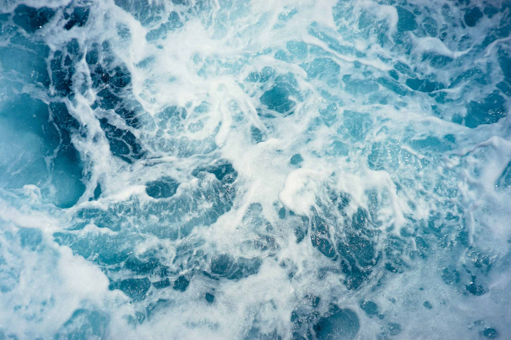

Fact checking Netflix’s Seaspiracy

Seaspiracy, the new documentary about global fisheries, has performed remarkably well on review aggregating websites and Netflix’s Top 10 list. Its reception among ocean experts, though, has been much less positive. The film is littered with factual errors, consistently misrepresents important ocean conservation issues, and draws conclusions that are not supported by the evidence. This is particularly disappointing because these profound inaccuracies risk obscuring the real issues the documentary brings to light.
Here’s a non-comprehensive list of some things that you probably want to know and that Seaspiracy got wrong.
Do sustainable fisheries exist?
Seaspiracy describes sustainable fishing as “something that isn’t working and can’t even be defined.” Neither of these statements are true.
The fishery I’ve done much of my research on is incredibly sustainable: it is well-monitored, well-managed, and does no damage to non-target species or the surrounding ecosystem. According to the Food and Agriculture Organization of the United Nations (FAO), 78.7 percent of fish caught and sold by commercial fishing vessels come from sustainable stocks. But what does it mean to say this?
There are two common definitions of sustainability that apply to fisheries. The first is quite broad. It comes from the Brundtland Report, a 1987 UN-backed attempt to reconcile economic development with environmental limits. The definition reads,
“sustainable development is development that meets the needs of the present without compromising the ability of future generations to meet their own needs.”
While this definition is not perfect, it does contain the core idea behind sustainability: we shouldn’t be taking part in any activity that compromises the wellbeing of future generations. From this perspective, we can think of sustainability as social and economic as well as biological.
A narrower definition, and one that is more specific to fisheries, is known as “maximum sustainable yield,” or MSY. This is the definition the FAO is using for that 78.7 percent statistic I mentioned earlier. MSY is the maximum amount of fish that can be caught consistently year after year. If you fish at or below MSY, your fishery will be sustainable in this narrow sense of the term.
That said, there are still plenty of sustainability challenges, even for fisheries that are operating at or below MSY. Seabirds, turtles, and marine mammals are heavily impacted by fishing, just as land animals are heavily impacted by terrestrial food systems. Ghost gear (fishing nets, buoys, and other equipment lost or abandoned at sea) is also a big problem and a major, although not the leading, source of plastic pollution.
Are the oceans going to run out of fish by 2048?
This claim gets repeated several times in Seaspiracy. It is simply not true. This projection, originally put forward in a 2006 paper published in Science, later turned out to be wrong.
The paper, led by Dr. Boris Worm of Dalhousie University, was based on some faulty assumptions having to do with the FAO’s database of global fishery statistics. A few years later, Dr. Worm was the lead author on a follow-up paper, also published in Science, that painted a very different picture of global fisheries. Management efforts that began in earnest in the 1990’s have had measurable success and many fish stocks are rebuilding or have been rebuilt, although overfishing is still a problem in many parts of the world. While fishing has caused severe declines in large, predatory fish species, a future of “empty oceans” does not seem to be in the cards.
Are consumers able to make informed decisions about the seafood they eat?
Seaspiracy uses a combination of falsehoods and misleadingly framed facts to conclude that ecolabels like the Marine Stewardship Council (MSC) and dolphin safe tuna are meaningless. These labels are far from meaningless, but it is difficult for consumers to make informed decisions about seafood.
I recommend eating MSC certified seafood or using Monterey Bay Aquarium’s Seafood Watch website. Know, however, that neither of these systems are perfect and they will sometimes provide you with conflicting information because they use different rating systems.
MSC and Seafood Watch are great resources, but at the end of the day fisheries sustainability is really complicated, as I hope I’ve highlighted above. It’s not just about what species of fish you’re targeting, but also what gear you’re using, what bycatch is getting caught in your nets (or lines, etc.), what your impact is on marine habitats, and how much carbon you’re emitting along the way. At the same time, doing our best to eat sustainable seafood is not going to stop overfishing. For that, we need international cooperation and policy change.
Is trawling just like bulldozing pristine Amazonian rainforest?
Seaspiracy memorably compares an estimate of the global footprint of bottom trawling with deforestation of the Amazon. It may be a tempting comparison, but bottom trawling and deforestation are just not the same thing.
When we think about deforestation in the Amazon, we imagine total destruction of local ecosystems and the potential of reaching a tipping point that would turn much of the forest into a dry grassland savannah. There are a lot of issues around bottom trawling, especially when it comes to dragging heavy fishing gear over sensitive habitat, but “total destruction” (at least in most cases) and “tipping point” are really not those issues. When trawls are used over soft, muddy parts of the seafloor, the damage they cause, while still real, is much more limited.
What are the biggest threats to marine life and what can I do about them?
Although Seaspiracy’s depiction of marine biodiversity loss is a little more extreme than the facts allow, marine ecosystems are under threat.
Climate change is already the most significant human impact in some marine ecosystems and is the greatest long-term threat faced by our oceans. The oceans are getting warmer and more acidic and marine ecosystems are already undergoing significant changes. In Rhode Island, where I’m from, we used to have a thriving lobster industry, but lobsters have become more scarce, in part due to warming inshore waters. This trend is part of a general poleward shift in many marine species distributions. But climate change is not just about species distributions—some of the scarier possibilities have to do with changes to ocean circulation. Ocean circulation patterns are crucial to supporting marine life and it is not clear what the future will look like if some of these systems break down. The best ways to make a difference in the fight against climate change are to educate yourself and others, support political action for a just and rapid transition away from fossil fuels, and consider ways to limit your own carbon footprint.
As I highlighted above, unsustainable fishing practices are a real problem, even if they’re not the whole story. One thing you can do is support organizations working to improve food security and sustainability in the fisheries of developing countries, where there tend to be more ecological and social challenges. At the same time, fisheries sustainability has a lot to do with political and economic power. A more just world is a key prerequisite to sustainable fishing. Another option is to eat local, sustainable seafood or plant-based alternatives. You will never be able to eat a diet that puts no pressure on natural ecosystems, but changing what you eat does decrease your personal footprint.
Pollution from land-based sources is also a key challenge. You’ve probably heard a lot about marine plastics. Another important impact, especially in coastal waters, is nutrient pollution, mostly from agriculture and human waste. When we let our waste and fertilizer overload coastal waters, photosynthetic algae bloom, die, and decompose, leading to low-oxygen areas known as “dead zones.” Dead zones are spreading around the world, are exacerbated by climate change, and actively threaten marine life. Because dead zones heavily depend on local context, there is no cookie-cutter solution. Find a local environmental organization that is working on science-based, justice-oriented solutions to these issues. If you live in a watershed with a lot of agricultural runoff, you may want to find ways to support more sustainable farming practices. If you live in an area with poor wastewater treatment, consider organizing with others to support upgrades to local treatment facilities. I also recommend paying attention to how much stuff, including plastic, you consume and how much trash you produce. Try to limit your footprint in both areas.
Marine biodiversity is incredibly important, both because our oceans and the biodiversity they contain give glory to God in their own right and because we humans need healthy marine ecosystems in order to live on this planet. Balancing sustainability, food security, and justice concerns is a tall order, but if we all get educated and get involved, we can make a difference.
Cover image by Christoffer Engström on Unsplash
This blog was originally shared on The Jesuit Post.